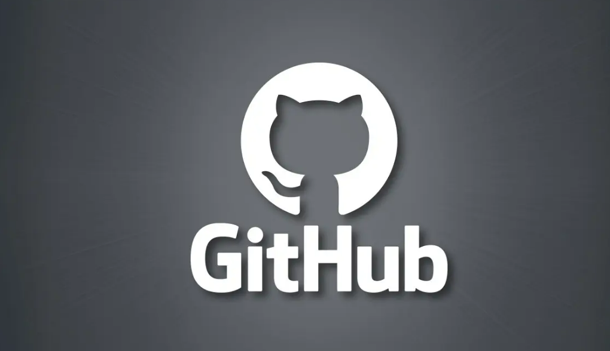
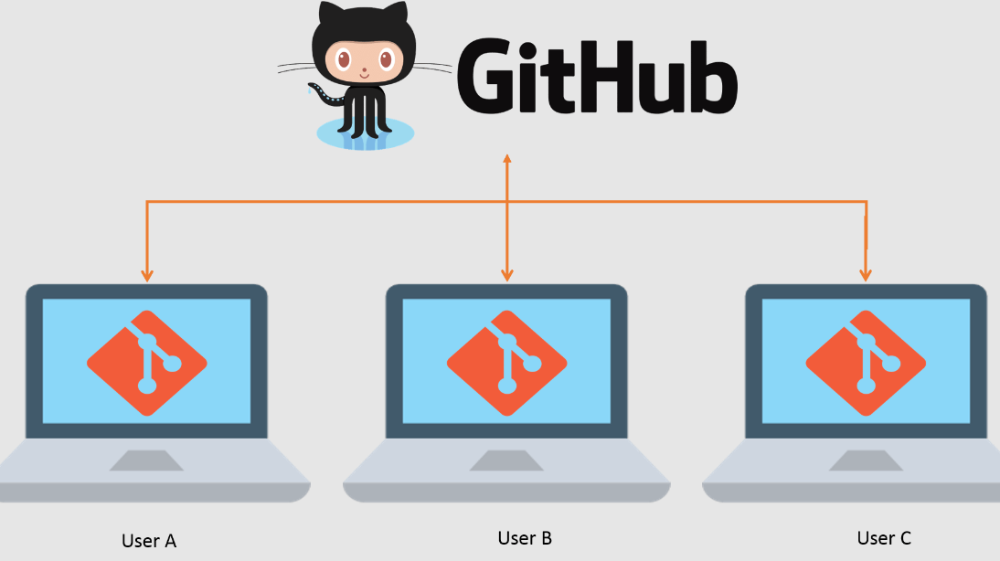
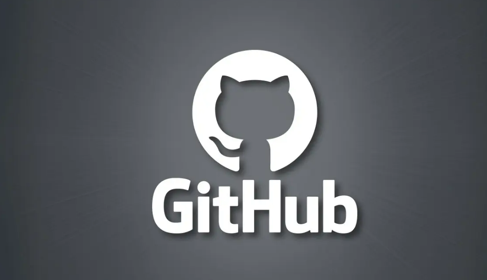
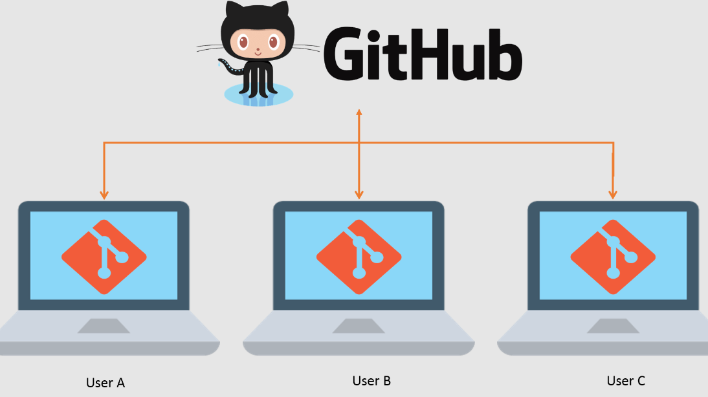

GITHUB
Github
 Git es un proyecto de código abierto que se inició en 2005 y creció hasta convertirse en uno de los VCS más populares del mercado: cerca del 87% de los desarrolladores utilizan Git para sus proyectos.
A diferencia de los sistemas de control de versiones centralizados, Git ofrece ramas de características.
Esto significa que cada ingeniero de software en el equipo puede dividir una rama de características
que proporcionará un repositorio local aislado para hacer cambios en el código.
Las ramas de características no afectan a la rama maestra, que es donde se encuentra el código original
del proyecto.
Una vez que se hayan realizado los cambios y el código actualizado esté listo, la rama de características puede fusionarse de nuevo con la rama maestra,
que es la forma en que se harán efectivos los cambios en el proyecto.

Github - Popuralidad
GitHub aloja más de 100 millones de repositorios
Esto se debe a que GitHub es una plataforma de gestión y organización de proyectos basada en la nube
que incorpora las funciones de control de versiones de Git. Es decir que todos los usuarios
de GitHub pueden rastrear y gestionar los cambios que se realizan en el código fuente en tiempo real,
a la vez que tienen acceso a todas las demás funciones de Git disponibles en el mismo lugar.
Además, la interfaz de usuario de GitHub es más fácil de usar que la de Git, lo que la hace accesible
para personas con pocos o ningún conocimiento técnico. Esto significa que se puede incluir a más miembros
del equipo en el progreso y la gestión de un proyecto, haciendo que el proceso de desarrollo
sea más fluido.
La mayoría de los cuales son proyectos de código abierto. Esta estadística
revela que GitHub se encuentra entre los clientes Git GUI
más populares y es utilizado por varios profesionales y grandes empresas, como Hostinger.

¿Cómo empezar con GitHub?
Puedes probar GitHub con tu equipo de forma gratuita. Hay un plan básico que incluye repositorios y colaboradores ilimitados, pero sólo 500 MB de espacio de almacenamiento.
Las funciones de JavaScript pueden mejorar la experiencia del usuario de un sitio web. Como lenguaje de scripting del lado del servidor, se trata de una de las principales tecnologías de la World Wide Web. Por ejemplo, al navegar por Internet, en cualquier momento en el que vea un carrusel de imágenes, un menú desplegable “click-to-show” (clic para mostrar), o cambien de manera dinámica los elementos de color en una página web, estará viendo los efectos de JavaScript.
1.- Crear un Repositorio de GitHub.
Git es un proyecto de código abierto que se inició en 2005 y creció hasta convertirse en uno de los VCS más populares del mercado: cerca del 87% de los desarrolladores utilizan Git para sus proyectos.
A diferencia de los sistemas de control de versiones centralizados, Git ofrece ramas de características.
Esto significa que cada ingeniero de software en el equipo puede dividir una rama de características
que proporcionará un repositorio local aislado para hacer cambios en el código.
Las ramas de características no afectan a la rama maestra, que es donde se encuentra el código original
del proyecto.
Una vez que se hayan realizado los cambios y el código actualizado esté listo, la rama de características puede fusionarse de nuevo con la rama maestra,
que es la forma en que se harán efectivos los cambios en el proyecto.

Github - Popuralidad
GitHub aloja más de 100 millones de repositorios
Esto se debe a que GitHub es una plataforma de gestión y organización de proyectos basada en la nube
que incorpora las funciones de control de versiones de Git. Es decir que todos los usuarios
de GitHub pueden rastrear y gestionar los cambios que se realizan en el código fuente en tiempo real,
a la vez que tienen acceso a todas las demás funciones de Git disponibles en el mismo lugar.
Además, la interfaz de usuario de GitHub es más fácil de usar que la de Git, lo que la hace accesible
para personas con pocos o ningún conocimiento técnico. Esto significa que se puede incluir a más miembros
del equipo en el progreso y la gestión de un proyecto, haciendo que el proceso de desarrollo
sea más fluido.
La mayoría de los cuales son proyectos de código abierto. Esta estadística
revela que GitHub se encuentra entre los clientes Git GUI
más populares y es utilizado por varios profesionales y grandes empresas, como Hostinger.

¿Cómo empezar con GitHub?
Puedes probar GitHub con tu equipo de forma gratuita. Hay un plan básico que incluye repositorios y colaboradores ilimitados, pero sólo 500 MB de espacio de almacenamiento.
Las funciones de JavaScript pueden mejorar la experiencia del usuario de un sitio web. Como lenguaje de scripting del lado del servidor, se trata de una de las principales tecnologías de la World Wide Web. Por ejemplo, al navegar por Internet, en cualquier momento en el que vea un carrusel de imágenes, un menú desplegable “click-to-show” (clic para mostrar), o cambien de manera dinámica los elementos de color en una página web, estará viendo los efectos de JavaScript.
1.- Crear un Repositorio de GitHub.
Un repositorio, o repo, será el eje central de tu proyecto.
Puede ser un archivo o una colección de archivos
que contengan código, imágenes, texto o cualquier otra cosa.
2.- Crear ramas en GitHub.
Con la creación de ramas, generas diferentes versiones de un repositorio.
Al hacer cambios en el proyecto en la rama de características,
un desarrollador puede ver cómo afectará al proyecto maestro cuando se integre.
Así es como puedes generar una rama de características.
3.- Entender los commits de GitHub.
Los commits son la forma en que se denominan los cambios guardados en GitHub.
Cada vez que cambies el archivo de la rama de características, tendrás que hacer un Commit
para mantenerlo..
4.- Crear solicitudes de extracción en GitHub.
Para proponer los cambios que acabas de hacer a otros desarrolladores que trabajan en el mismo proyecto,
debes crear una solicitud de extracción. Estas facilitan el trabajo conjunto en los proyectos,
ya que son la principal herramienta de colaboración en GitHub.
Las solicitudes de extracción te permiten ver las diferencias entre el
proyecto original y tu rama de características. Es la forma de pedir a tus compañeros que las revisen.
Si los otros desarrolladores lo aprueban, pueden fusionar la solicitud de extracción,
lo que aplicará esos cambios al proyecto principal.